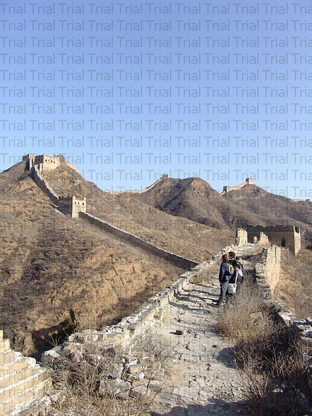
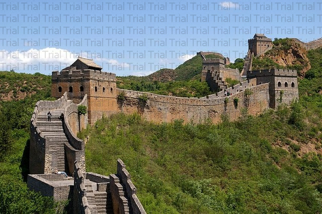

Связаться с Нами
Контакты
(Михаил)
+375293649351
A. drakomishel@gmail.com
История грандиозного сооружения Китая
Начало строительства Великой Китайской стены относят к 221 году до н.э. По легендам на строительство была брошена армия императора (порядком 300 тысяч человек). Здесь же были задействованы и большое количество крестьян, ведь убыль строителей нужно было постоянно компенсировать новыми людскими ресурсами, благо с этим в Китае проблем не возникало. Есть даже ряд людей, считающих, что Великая Китайская стена построена русскими, но оставим это как еще одну красивую догадку.
Основную часть стены возвели как раз при Цине. Фронт работы велся по объединению уже построенных укреплений в единую конструкцию и расширение стены на запад. Большая часть стены представляла собой обычные земляные насыпи, которые впоследствии уже былизаменены камнем и кирпичом.

Интерес вызывает географическое положение стены. Она как бы разделяет Китай на две части – север кочевников и юг земледельцев. Дальнейшие проводимые исследования подтверждают этот факт.
По совместительству самое длинное укрепление является еще и самым длинным кладбищем. О количестве похороненных здесь строителей можно только догадываться. Многих прямо здесь закапывали в стену и продолжали строительство на их костях. Их останки находят и в наши дни.
На основе большой смертности стену за века окружили множество легенд. Согласно одной из них императору Цинь Шихуанди предсказали, что строительство стены завершится либо после смерти человека с именем Вано, либо 10 тысяч других людей. Император, разумеется, приказал найти Вано, убить его и закопать в стене.
За время существования стены ее пытались множество раз восстанавливать. Этим занимались династии Хань и Суй. Современный вид Великая Китайская стена получила при династии Мин (1368-1644). Именно здесь земляные насыпи заменили кирпичи, а некоторые участки отстроили заново. Здесь же были установлены сторожевые башни, часть которых сохранилась и до наших дней. Основным назначением этих башен было оповещение о наступлении врага. Так ночью оповещение о тревоге передавалось от одной башни к другой с помощью разожженного огня, днем с помощью дымов.

Огромный размах строительство приобрело в период правления императора Ваньли (1572-1620). Многие вплоть до XX века думали, что именно он, а не Цинь Шихуанди, возвел это грандиозное сооружение.
Как оборонительное сооружение стена показала себя плохо. Ведь для крупного завоевателя стена не является преградой. Помешать противнику могут только люди, а вот с людьми на стене были проблемы. Поэтому по большей части охрана стены смотрела не на Север, а на… Юг. Нужно было следить за уставшими от налогов и работы крестьянами, желающих переметнуться на свободный север. В связи с этим существует даже полумиф о том, что бойницы Великой Китайской стены направлены в сторону Китая.
С ростом Китая на Север, функции стены как границы исчезли полностью и она начала приходить в упадок. Как и многие другие крупные сооружения древности, стену начали подвергать разбору на стройматериал. И лишь в наше время (1977 г.) китайское правительство внесло штраф за порчу Великой Китайской стены.
Сейчас Великая Китайская стена является признанным символом Китая. Многие участки были снова отреставрированы и показываются туристам, один из участков даже проходит рядом с Пекином, что привлекает миллионы любителей китайской культуры.
-2.jpg)